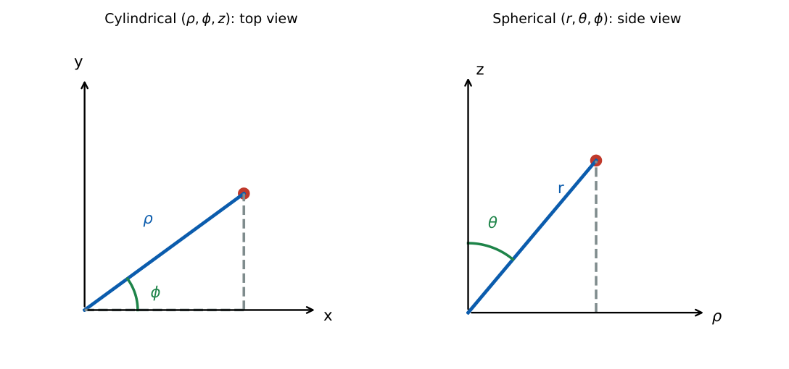

Vector Analysis and Coordinate Systems
In this chapter
Choosing the right coordinate system, differential elements, divergence and curl in curvilinear coordinates, and applying the divergence and Stokes theorems to simple fields. (The Cartesian theory is also developed in the Engineering Mathematics notes; here the emphasis is on the coordinate systems used in electromagnetics.)
1.1 Coordinate systems

Cartesian \((x,y,z)\): \(d\mathbf l=dx\,\ar_x+dy\,\ar_y+dz\,\ar_z\), \(dV=dx\,dy\,dz\).
Cylindrical \((\rho,\phi,z)\): \(d\mathbf l=d\rho\,\ar_\rho+\rho\,d\phi\,\ar_\phi+dz\,\ar_z\), \(dV=\rho\,d\rho\,d\phi\,dz\); \(\rho=\sqrt{x^2+y^2}\), \(\phi=\tan^{-1}(y/x)\).
Spherical \((r,\theta,\phi)\): \(d\mathbf l=dr\,\ar_r+r\,d\theta\,\ar_\theta+r\sin\theta\,d\phi\,\ar_\phi\), \(dV=r^2\sin\theta\,dr\,d\theta\,d\phi\); \(r=\sqrt{x^2+y^2+z^2}\), \(\theta=\cos^{-1}(z/r)\).
Surface elements: sphere of radius \(R\): \(dS=R^2\sin\theta\,d\theta\,d\phi\) (area \(4\pi R^2\)); cylinder: \(dS=\rho\,d\phi\,dz\).
Unit vectors are mutually orthogonal and right-handed: \(\ar_\rho\times\ar_\phi=\ar_z\), \(\ar_r\times\ar_\theta=\ar_\phi\). In cylindrical and spherical coordinates \(\ar_\rho,\ar_\phi,\ar_r,\ar_\theta\) change direction from point to point, so their derivatives are not zero. Use the system that matches the symmetry of the source: planes \(\to\) Cartesian, wires and coaxial lines \(\to\) cylindrical, point charges and spheres \(\to\) spherical.
1.2 Vector algebra
\(\mathbf A\cdot\mathbf B=|A||B|\cos\theta\); \(\mathbf A\times\mathbf B\) has magnitude \(|A||B|\sin\theta\) and direction by the right-hand rule. Scalar triple product \(\mathbf A\cdot(\mathbf B\times\mathbf C)\) is the volume of a parallelepiped. The component of \(\mathbf A\) along \(\mathbf B\) is \(\mathbf A\cdot\mathbf B/|\mathbf B|\). The distance between \((x_1,y_1,z_1)\) and \((x_2,y_2,z_2)\) in Cartesian coordinates is \(\sqrt{\sum\Delta^2}\).
1.3 Gradient, divergence and curl
Cylindrical: \(\grad f=\frac{\partial f}{\partial\rho}\ar_\rho+\frac1\rho\frac{\partial f}{\partial\phi}\ar_\phi+\frac{\partial f}{\partial z}\ar_z\), \(\ \grad\cdot\mathbf A=\frac1\rho\frac{\partial(\rho A_\rho)}{\partial\rho}+\frac1\rho\frac{\partial A_\phi}{\partial\phi}+\frac{\partial A_z}{\partial z}\).
Spherical: \(\grad f=\frac{\partial f}{\partial r}\ar_r+\frac1r\frac{\partial f}{\partial\theta}\ar_\theta+\frac1{r\sin\theta}\frac{\partial f}{\partial\phi}\ar_\phi\),
\(\grad\cdot\mathbf A=\frac1{r^2}\frac{\partial(r^2A_r)}{\partial r}+\frac1{r\sin\theta}\frac{\partial(\sin\theta A_\theta)}{\partial\theta}+\frac1{r\sin\theta}\frac{\partial A_\phi}{\partial\phi}\).
\(\grad\times\mathbf A\): determinant form with the scale factors; for fields with only a radial component the curl vanishes. Identities: \(\grad\times\grad f=0\), \(\grad\cdot\grad\times\mathbf A=0\), \(\grad^2f=\grad\cdot\grad f\).
1.4 Line, surface and volume integrals
Work \(\int\mathbf F\cdot d\mathbf l\); flux \(\iint\mathbf F\cdot d\mathbf S\); charge \(\iiint\rho_v\,dV\). For surface integrals use the surface element and outward normal of the geometry: for a sphere of radius \(R\) the normal is \(\ar_r\) and \(dS=R^2\sin\theta\,d\theta\,d\phi\).
1.5 Divergence theorem and Stokes’ theorem
Divergence: \(\oiint_S\mathbf A\cdot d\mathbf S=\iiint_V\grad\cdot\mathbf A\,dV\) (closed \(S\)).
Stokes: \(\oint_C\mathbf A\cdot d\mathbf l=\iint_S(\grad\times\mathbf A)\cdot d\mathbf S\) (right-hand rule between \(C\) and \(d\mathbf S\)).
Consequences used throughout: \(\grad\cdot\mathbf D=\rho_v\Leftrightarrow\) Gauss’s law; \(\grad\times\mathbf H=\mathbf J+\partial\mathbf D/\partial t\Leftrightarrow\) Ampère’s law.
\(\mathbf A=\rho\,\ar_\rho\) over a cylinder of radius 2, height 3: \(\grad\cdot\mathbf A=\frac1\rho\frac{d(\rho^2)}{d\rho}=2\); \(V=\pi(2)^2(3)=12\pi\); flux \(=24\pi\). Direct check: on the side \(\mathbf A\cdot d\mathbf S=2\cdot(2\pi\cdot2\cdot3)=24\pi\); end caps contribute \(0\).
(i) In curvilinear coordinates \(\grad\cdot\mathbf A\) is not the sum of plain partial derivatives; the \(\rho\) and \(r^2\sin\theta\) factors matter. (ii) \(\ar_\rho\) and \(\ar_\phi\) are position dependent. (iii) \(\theta\) in spherical coordinates is measured from the \(z\)-axis, from \(0\) to \(\pi\). (iv) Divergence theorem needs a closed surface including any end caps.
For a radial field \(A_r=r^n\) the divergence is \((n+2)r^{n-1}\). For a field with constant divergence use flux \(=\text{div}\times V\). For \(\ar_\phi\) fields such as \(\mathbf B\) of a wire use Stokes on a circle: the circulation is \(2\pi\rho A_\phi\).
1.6 GATE problems
Q1. For \(\mathbf A=\rho\,\ar_\rho\) (cylindrical), \(\grad\cdot\mathbf A=\) (A) 1 (B) 2 (C) \(\rho\) (D) 0.
Q2. \(\grad\times(\grad V)=\) (A) \(\grad^2V\) (B) \(0\) (C) \(V\) (D) \(\grad\cdot V\).
Q3. The volume of a sphere of radius \(R\) from \(\iiint r^2\sin\theta\,dr\,d\theta\,d\phi\) is (A) \(\frac43\pi R^3\) (B) \(4\pi R^2\) (C) \(\pi R^3\) (D) \(2\pi R^3\).
Q4. The surface element on a sphere of radius \(R\) is (A) \(R\,d\theta\,d\phi\) (B) \(R^2\sin\theta\,d\theta\,d\phi\) (C) \(R^2d\theta\,d\phi\) (D) \(R\sin\theta\,d\theta\,d\phi\).
Answers: Q1 (B). Q2 (B). Q3 (A). Q4 (B).
Q5. For \(\mathbf A=r^2\ar_r\) (spherical), \(\grad\cdot\mathbf A\) at \(r=2\) is (A) 4 (B) 8 (C) 16 (D) 2.
Q6. The outward flux of \(\mathbf A=\rho\,\ar_\rho\) through the closed cylinder \(\rho=2\), \(0\le z\le3\) (including end caps) is (A) \(12\pi\) (B) \(24\pi\) (C) \(48\pi\) (D) \(6\pi\).
Q7. \(\mathbf A=-y\,\ar_x+x\,\ar_y\). \(\oint\mathbf A\cdot d\mathbf l\) around a circle of radius 3 in the \(xy\)-plane, counter-clockwise, is (A) \(9\pi\) (B) \(18\pi\) (C) \(6\pi\) (D) \(0\).
Answers: Q5 (B): \(\frac1{r^2}\frac{d(r^4)}{dr}=4r=8\). Q6 (B). Q7 (B): curl \(=2\ar_z\), area \(9\pi\).
Q8. Distance between \((1,2,3)\) and \((4,6,3)\) is .
Q9. The cylindrical coordinate \(\rho\) of the point \((3,4,5)\) is .
Q10. The polar angle \(\theta\) (degrees) of the point \((1,1,\sqrt2)\) is .
Answers: Q8: \(\sqrt{9+16}=5\). Q9: \(5\). Q10: \(r=2\), \(\cos\theta=\sqrt2/2\), \(\theta=45^\circ\).
Q11. Which are true? (A) \(\grad\cdot\grad\times\mathbf A=0\) (B) \(\grad\times\grad V=0\) (C) \(\ar_\phi\) is constant in direction (D) the divergence theorem applies to closed surfaces.
Answers: Q11: (A), (B), (D).
T1. \(dV\) in spherical coordinates? T2. \(\grad\cdot(r^3\ar_r)\)? T3. Stokes’ theorem statement?
Answers: T1: \(r^2\sin\theta\,dr\,d\theta\,d\phi\). T2: \(\frac1{r^2}\frac d{dr}r^5=5r^2\). T3: circulation \(=\) flux of curl.
- \(dV\): \(\rho\,d\rho\,d\phi\,dz\) (cyl.), \(r^2\sin\theta\,dr\,d\theta\,d\phi\) (sph.).
- Divergence: cyl. \(\frac1\rho\partial_\rho(\rho A_\rho)+\dots\); sph. \(\frac1{r^2}\partial_r(r^2A_r)+\dots\)
- \(\grad\times\grad f=0\), \(\grad\cdot\grad\times\mathbf A=0\).
- Divergence theorem: closed surface; Stokes: right-hand rule.
- Match the coordinate system to the symmetry.